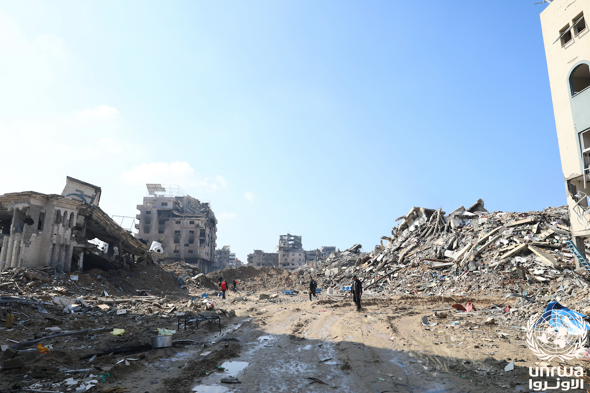

Удары по Газе продолжаются: 13 сентября погибли два человека, остановились генераторы больниц
13 сентября удар был нанесён по автомобилю в квартале Тель аль-Хава в городе Газа. По данным Министерства здравоохранения, из-за нехватки топлива вышли из строя больничные генераторы. Общее число погибших достигло 73 669 человек.

13 сентября 2026 года Израиль нанёс воздушный удар по гражданскому автомобилю в квартале Тель аль-Хава в городе Газа. По данным Al Jazeera, при ударе погибли по меньшей мере два человека и 13 получили ранения.
В заявлении израильской армии сообщалось, что целью были «два боевика ХАМАС». На кадрах с места происшествия видно, что у автомобиля сорваны крыша и двери.
Удары 9–10 сентября
До этого, в ночь с 9 на 10 сентября, в Бейт-Лахии на севере Газы погибли четыре члена одной семьи: муж, жена и две их дочери 12 и 8 лет. Удар произошёл вблизи больницы Камаль Адван.
В те же дни было зафиксировано, что у лагеря Джабалия велась стрельба с вертолёта, а в квартале ад-Дарадж в результате удара беспилотника ранения получили трое палестинцев. Удару подверглись также мечеть аль-Хак к западу от лагеря Нусейрат, сам лагерь Нусейрат и район аль-Маваси в Хан-Юнисе.
Ситуация в больницах
По данным Министерства здравоохранения Газы, из-за нехватки топлива, масла и запасных частей прекратили работу генераторы ряда больниц.
Топливо, которое Израиль разрешил ввезти, покрывает лишь чрезвычайные нужды и значительно меньше 2 500 литров, которые больницы требуют ежемесячно.
— Данные Министерства здравоохранения Газы (из перевода Al Jazeera, 13.09.2026)
Арабская больница «Аль-Ахли» прекратила оказание услуг визуализации после того, как её основной генератор вышел из строя из-за нехватки топлива и запасных частей.
В цифрах
- Удар 13 сентября: 2 погибших, 13 раненых (Тель аль-Хава, город Газа)
- 9–10 сентября, Бейт-Лахия: погибли 4 человека из одной семьи (дочери 12 и 8 лет)
- Погибшие с 7 октября 2023 года: 73 669 человек
- Раненые: 174 652 человека
- Погибшие после соглашения о прекращении огня: более 1 300
- Ежемесячная потребность больниц в топливе: 2 500 литров
Общее число жертв
По данным местных властей, число погибших с 7 октября 2023 года составляет 73 669 человек, раненых — 174 652 человека. Основную часть погибших составляют женщины и дети.
С момента вступления в силу соглашения о прекращении огня в октябре 2025 года при израильских ударах погибли более 1 300 палестинцев.
Заявления сторон
ХАМАС обвинил Израиль в нарушении соглашения о прекращении огня и в противодействии плану президента США Дональда Трампа по завершению войны.
Во время визита в Ирландию Дональд Трамп заявил, что в Газе «сейчас происходит очень немногое», и отметил, что администрация «проделала прекрасную работу».
Состояние соглашения
Поддержанный США мирный план был подписан 9 октября 2025 года и вступил в силу с 10 октября. План предусматривал поэтапную реализацию: обмен заложниками, расширение поставок помощи, разоружение и поэтапный вывод израильских сил.
6 июля 2026 года гражданская администрация ХАМАС в Газе подала в отставку. А 31 июля было объявлено о достижении соглашения о разоружении вооружённых групп; оно было увязано с продвижением процесса восстановления и выводом израильских сил.
Контекст
В начале сентября два члена правительства Израиля — министр национальной безопасности Итамар Бен-Гвир и министр обороны Исраэль Кац — обнародовали планы, касающиеся переселения населения Газы. Государственный департамент США отверг любые формы принудительного переселения.
Состояние системы здравоохранения
Больницы Газы получают электроэнергию в основном от дизельных генераторов. Центральная электросеть сектора вышла из строя за время войны; генераторы же зависят от топлива, масла и запасных частей.
Остановка генератора на практике прекращает работу отделений реанимации, аппаратов искусственной вентиляции лёгких, инкубаторов, аппаратов диализа и оборудования визуализации. Арабская больница «Аль-Ахли» прекратила оказание услуг визуализации после выхода из строя основного генератора.
Корреспондент Al Jazeera сообщил, что в системе здравоохранения наблюдается полный коллапс.
Вода и санитария
Загрязнение воды в Газе с января 2026 года выросло почти втрое. Все пять очистных сооружений сточных вод в секторе не работают.
Сток неочищенных сточных вод в подземные воды и в море повышает риск распространения инфекционных заболеваний. Международные гуманитарные организации неоднократно фиксировали это положение.
Как собираются данные
Цифры по жертвам публикуются Министерством здравоохранения Газы. Эти данные формируются на основе доставленных в больницы тел и зарегистрированных случаев.
Оставшиеся под завалами учитываются отдельно: примерно 8 000–14 000 человек внесены в число пропавших без вести и не входят в общую цифру. То есть публикуемый показатель не является полным.
Структуры ООН и международные организации обычно используют эти данные; израильская сторона считает эти цифры спорными.
Как нарушается соглашение о прекращении огня
Соглашение, подписанное 9 октября 2025 года и вступившее в силу с 10 октября, формально действует. Однако на практике удары не прекратились: с момента вступления соглашения в силу при израильских ударах погибли более 1 300 палестинцев.
Согласно подсчётам, опубликованным Al Jazeera в ноябре 2025 года, за шесть месяцев после вступления соглашения в силу Израиль 921 раз открывал огонь по мирному населению, 97 раз вторгался в жилые районы за «жёлтой линией», 1 109 раз бомбил Газу и в 273 случаях разрушал имущество.
«Жёлтая линия» — условная линия, определённая в рамках соглашения как рубеж отхода израильских сил. Предполагалось, что территории по её другую сторону перейдут под контроль палестинской администрации.
Позиция израильской стороны
Израильская армия обычно объясняет удары тем, что целью были боевики ХАМАС или военная инфраструктура. По удару 13 сентября также было заявлено, что целью были «два боевика ХАМАС».
Палестинская сторона, в свою очередь, отмечает, что среди жертв есть мирные жители. Возможность проверки каждого отдельного случая независимыми источниками ограничена: доступ международных СМИ в Газу находится под ограничениями.
Региональная и международная реакция
В декларации Шанхайской организации сотрудничества, принятой 1 сентября в Бишкеке, указано, что всестороннее решение палестинского вопроса необходимо для стабильности на Ближнем Востоке.
В декларации БРИКС, принятой 12–13 сентября в Нью-Дели, отмечено, что насилие продолжается несмотря на соглашение от октября 2025 года; в документе поддержаны членство Палестины в ООН и решение на основе двух государств.
Режим доставки помощи
Доставка гуманитарной помощи и топлива в Газу осуществляется через контролируемые Израилем пункты пропуска. Объём ввозимого и перечень товаров определяются Израилем.
По данным Министерства здравоохранения, топливо, разрешённое к ввозу, покрывает лишь чрезвычайные нужды и значительно меньше ежемесячной потребности больниц в 2 500 литров. Поставки запасных частей и масла также ограничены.
Структуры ООН и международные неправительственные организации неоднократно отмечали необходимость увеличения объёма помощи.
В декларации БРИКС, принятой 12–13 сентября в Нью-Дели, отмечено, что насилие продолжается несмотря на соглашение от октября 2025 года.
Международные гуманитарные организации фиксируют тяжесть положения в Газе с водой, электричеством и медицинским снабжением: все пять очистных сооружений сточных вод в секторе не работают, а загрязнение воды с января выросло почти втрое.